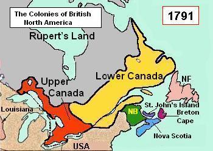
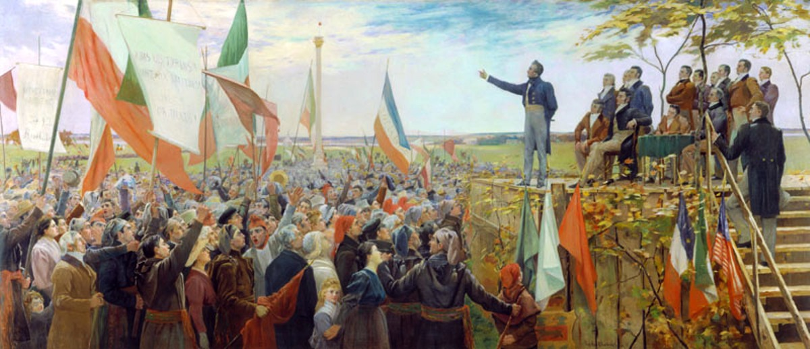
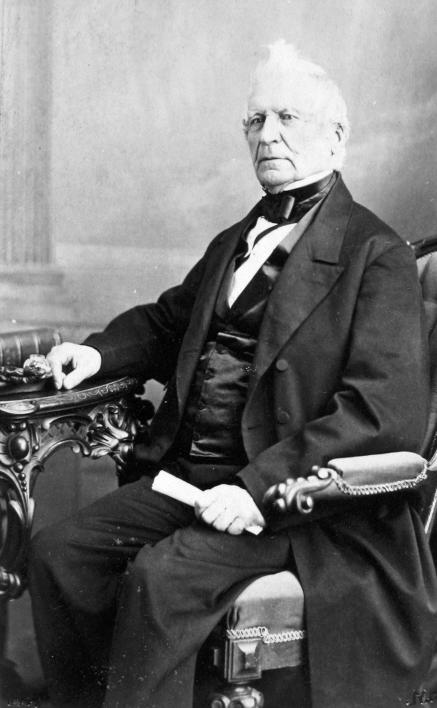
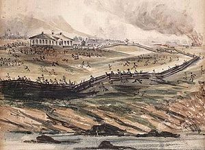
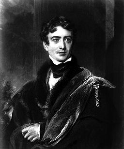
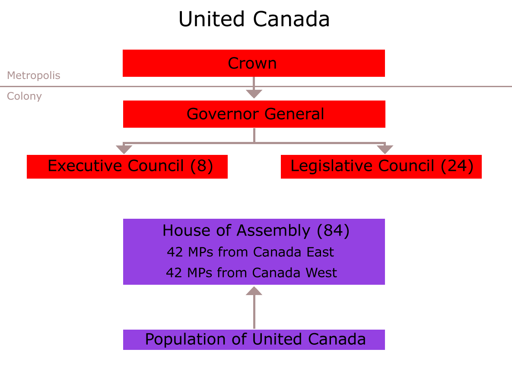
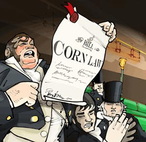
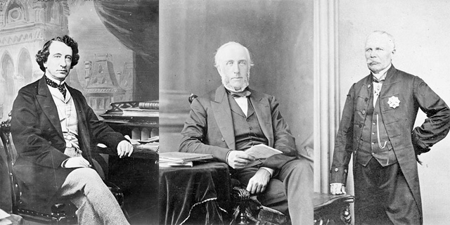

The Roaring 1920's
Constitutional Act created
Louis-Joesph Paineau is elected to the Legislative Assembly
William Lyon Mackenzie establishes the Colonial Advocate
Papineau becomes leader of the Patriotes
Battle of St. Charles
Lord Durham arrives in Quebec
Act of Union is passed
Corn Laws
Rebellions loses bill
The Great Coalition
1790
1791
1792
1793
1794
1795
1796
1797
1798
1799
1800
1801
1802
1803
1804
1805
1806
1807
1808
1809
1810
1811
1812
1813
1814
1815
1816
1817
1818
1819
1820
1821
1822
1823
1824
1825
1826
1827
1828
1829
1830
1831
1832
1833
1834
1835
1836
1837
1838
1839
1840
1841
1842
1843
1844
1845
1846
1847
1848
1849
1850
1851
1852
1853
1854
1855
1856
1857
1858
1859
1860
1861
1862
1863
1864
1865
Constitutional Act creaters Upper and Lower Canada 

One very important event that lead to confederation was the Constitutional Act of 1791. This act was passed by the British parliament to create the appearance of an assembly but not give it much power. They knew they could not have just one assembly, because there was a majority of French settlers, so they split the colony of Quebec into two parts- Upper Canada and Lower Canada. The English population lived in Upper Canada and the French population lived in Lower Canada.
Each colony got it’s own assembly. This act required a legislative council and an elected legislative assembly, but in the end, the British government still had the power because they appointed the council who made the final decisions. The councils had the power to veto decisions made by the assembly, which happened often. Many projects such as building roads, were shut down. Problems were created because of land speculation and crown and clergy reserves and were a significant reason for discontent in the colonies.
This event was important because it started the discontent in Upper and Lower Canada. Without the constitutional act, there would be no Upper and Lower Canada, no assembly to rebel against, and no rebellions. This event was essential to the confederation of Canada.
Louis-Joesph Paineau is elected to the Legislative Assembly of Lower Canada

In 1814 Louis-Joseph Papineau was elected into the Legislative Assembly of Lower Canada in Montreal. This is an important event because this led to Papineau changing himself from beveling in the British rule of that they would bring change for the better to changing the government. A year later he became the speaker of the Legislative Assembly leading to him have a more important role. With Papineau changed and elected he would put more pressure on the Chateau Clique to reform the government from inside the government. Sadly there was no affect against the government so Papineau joined the armed rebellions to fight against the Chateau Clique in 1837. And after The Rebellions of 1837, the British Empire sent Lord Durham to change the old ways of government leading to the Confederation. Louis-Joseph Paineau's decision of reforming the government and him being elected into the Legislative Assembly is a big deal.
William Lyon Mackenzie establishes the Colonial Advocate

In Queenston Canada on May 18 1824, William Lyon Mackenzie was taking an aggressive approach when he established the Colonial Advocate. He criticized the government and Family Compact in his articles because he wanted to bring change in the government. The Family Compact was a group of powerful men in Upper Canada and they held power through the Legislative Assembly and the Executive Council. They didn't care about what the people needed help with, for example if the people needed a new road for better transportation, they wouldn't allow it. William Lyon Mackenzie’s objective was to influence voters in the elections with his strong political convictions to tell them they had the wrong leaders, but the members of the Compact weren't to happy with this and damaged Mackenzie's office/press on June 8 1826.
This is significant because William Lyon Mackenzie articles made the people realize how bad the government was and that they needed a responsible government. Even he wanted a responsible government, and because of this reason his radical change plan got him elected to the Legislative Assembly in 1828. Since he got elected, the people got a say in what they wanted
Papineau becomes leader of the Patriotes

Event: In the year 1826 Louis Joseph Papineau became the leader of the patriotes.
Involved: Edmund O' Callaghan, Wilfred Nelson and the Vindictator.
When and Where: In lower Canada 1826.
Significance of the Event: The event is significant because Papineau lead the rebellion and made them reform, 30 years later the rebels fought the government and this event is what caused Papineau to be arrested, and started the rebellion.
Battle of St. Charles

The rebellion was caused by patriots who resisted arrest in the lower mainland. Other groups joined as well, one particular group called the sons of liberty. The rebellions went through towns with their weapons out and showing that they were ready for battle if it came to it. The event got more attention as the attempt to arrest Papineau took place. He quickly fled to the United States and the battle moved to the countryside. The battles were led by Wolfred Nelson, the Patriots took saint Dennis a village in the Richelieu valley. But the rebels soon lost battles in Saint Charles and Eustache. The rebellion was over in December 1837 in Lower Canada only after a month after it was started. The patriots could have won the battle if the Church was still there to support them. However the Church backed out leaving the patriots weak and powerless which eventually led to the loss of Saint Charles.
Lord Durham arrives in Quebec

Event:In 1838 Lord Durhams report was issued.
Involved:Lord Durham, Charles Buller, Thomas Turton, and Edward Gibbon.
When and Where:Lower and Upper Canada 1838.
Significance of the Events:The event is significant because it helped bring lower and upper Canada together because Lord Durham knew that the real problem was a cultural issue and his idea was to assimilate the french culture through union and immigration of English speaking people.
Act of Union is passed

After the rebellions of 1837, the British government appointed a reformer, Lord Durham, to be governor in chief of the Canadas. Lord Durham wrote a report that was the basis for the Act of Union. It was made to establish single parliament with equal representation from each colony, consolidate debt, create a permanent civil list, and banish french language from official government use. The Act of Union was passed in 1840 by the British parliament. This act joined Upper and Lower Canada.
Even though there was controversy in both Upper and Lower Canada, this act was passed. In Upper Canada, the family compact opposed the act because they did not want to join with the French population. In Lower Canada, the religious and political leaders didn’t approve of the act’s anti-French laws.
This act was important because it created the province of Canada. It united Upper and Lower Canada into one, and created a responsible government. This government became so intolerable that it went on to create confederation.
Corn Laws

The Corn Laws were a part of Britain’s colonial mercantile economic system. Grain from the colonies entered Britain tax free or a low tariff. However, the grain from different countries around the world had higher tax applied to it. This meant that the foreign grain importers had to increase their prices for the grain in order to gain profit. In the 1840’s people began to campaign against the foreign tax. These people were industrialists who wanted raw grain and process it to sell it for a higher price. These people wanted the market to take control of the prices. The Corn Law was finally passed in 1846 and it had a significant impact on the British North America. The BNA always had a guaranteed market for its wheat. There was also a depression at the time which didn’t benefit British North America. In the 1850s the market turned and The British North America found a new trading partner named the United States of America. After the Corn Law passed Britain thought that they had no use for colonies in the BNA and the BNA thought about becoming an independent country. but the Corn law didn’t affect the BNA economy because it was placed only for a short period of time.
Rebellions loses bill

In February of 1849, the Rebellion Losses Bill was introduced by the newly elected and reformist government. It was made by Canada West legislation to compensate people from Canada East whose property had been damaged during the Rebellions of 1837. This bill proposed to use tax money to help heal divisions in Canada. Many people and some politicians opposed the bill because they saw this as a way for. On April 25 1849, Lord Elgin signed the bill, this outraged many people and led to a 2 day riot where the parliament buildings were set on fire. A majority of the people rioting were the English-speakers.
This is significant because, Lord Elgin (who was Lord Durham's son-in-law) wanted to make the responsible government a reality. He believed the policy would help in relieving Britain's economic responsibility and at the same time still keep them in British Empire. Lord Elgin doubted the Rebellion Losses Bill because he thought it was a reward for possible traitors, but he understood the meaning of local responsibility and signed the bill.
The Great Coalition

One of the most significant events that lead towards confederation was the Great Coalition in 1864. A coalition is an alliance formed for combined action. This is what happened in 1864 after the governments in Canada East and Canada West were frustrated with their government system. In order for a bill to be passed, there had to be a double majority. This meant that both the French and the English had to vote in favour of a bill. Since there was conflict between the French and the English, they always voted against each other. This caused frustration and some were very set on ending this political deadlock. John A. MacDonald joined with George Brown and George-Ettienne Cartier and formed a new party called “The Liberal Conservatives”. They believed that this was the only way to get representation by population in the government. It would also give Canada West more members of parliament and give them more power in Canada East.
This was very important to confederation because it lead to three conferences. The Charlottetown conference, the Quebec conference, and the London conference. Without these conferences, confederation would not have happened. Without this new party, Canada West and Canada East would not have come together when they did, and our country would be different today.